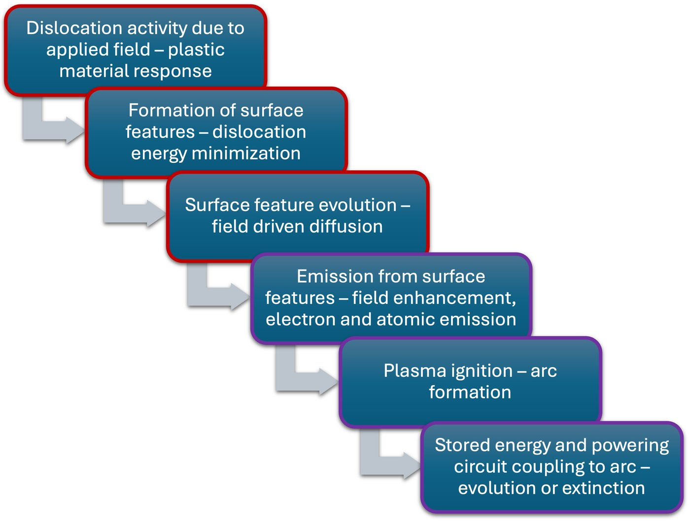
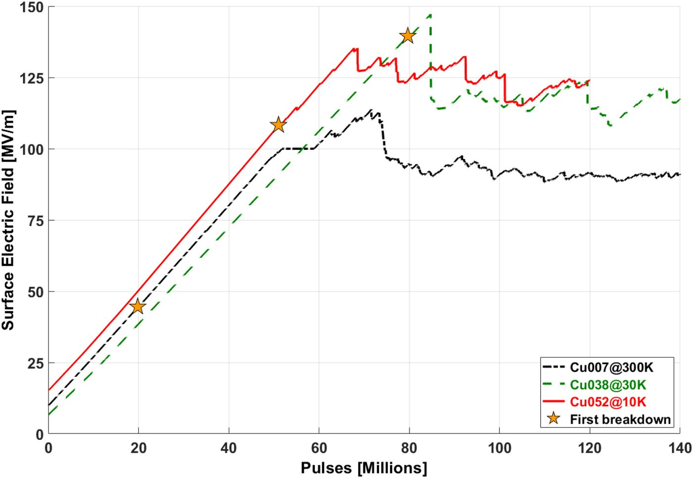
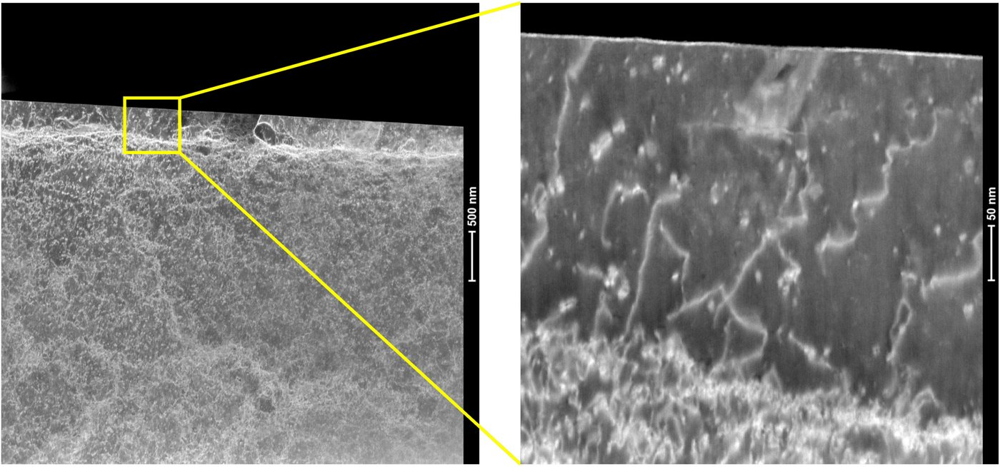
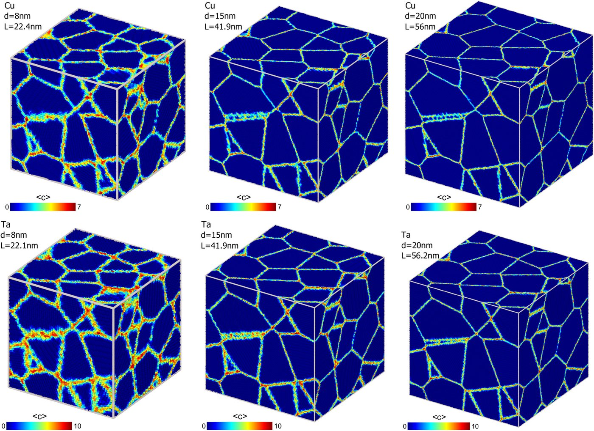
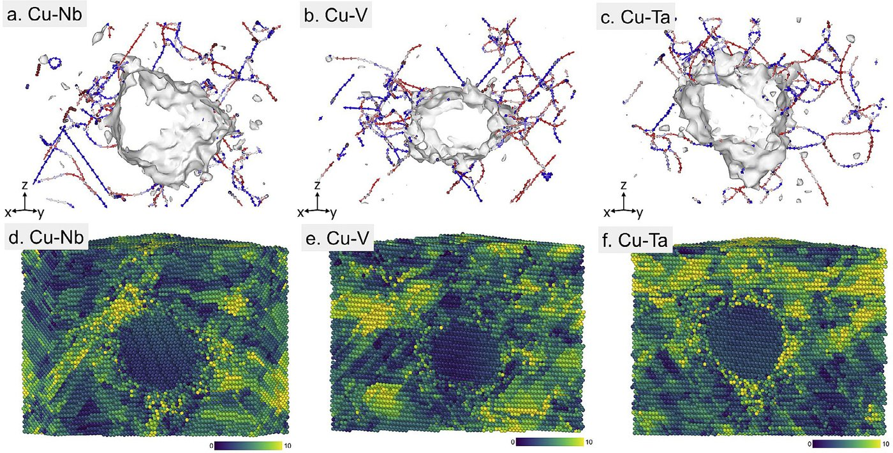
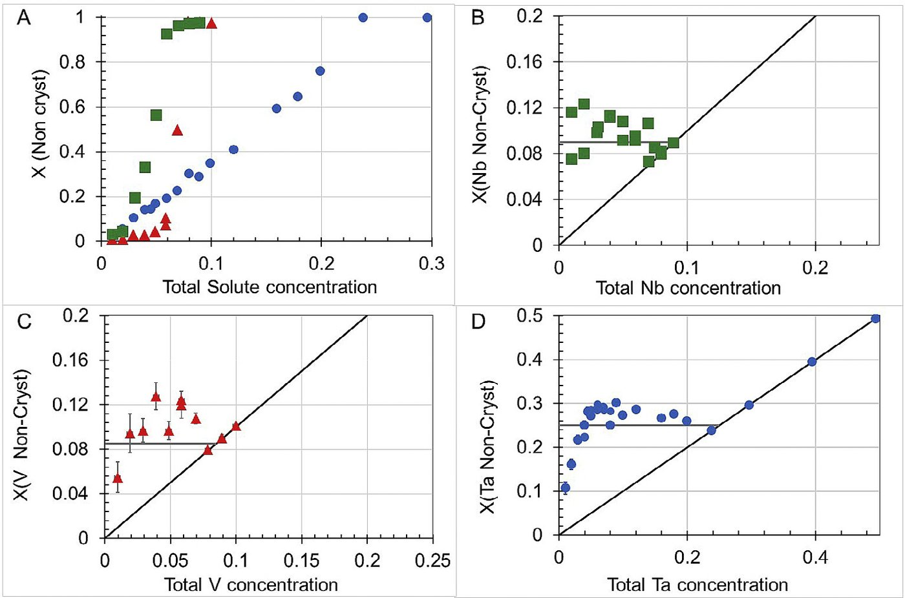

High-field electrodes
MDDF model of vacuum breakdown, conditioning as cyclic restructuring of the near-surface dislocation network, and TEM evidence of dislocation-denuded zones in field-exposed copper. Experimental partner: CERN / CLIC.
Racah Institute of Physics · Interdisciplinary Computational Physics Laboratory · Center for Nanoscience and Nanotechnology · Hebrew University of Jerusalem
The group studies the response of materials driven far from equilibrium by irradiation, intense electric fields, or severe mechanical deformation. The approach is to isolate the controlling microscopic mechanism with atomistic simulation, vary the drive to expose scaling, and formulate a reduced model that can be tested in experiment. Since 2016 this has included electron microscopy (SEM, EBSD, TEM) and focused-ion-beam cross-sectioning, including direct microscopy of subsurface dislocation structures in high-field electrodes.
Since 2013 Ashkenazy has led the Hebrew University collaboration with CERN on the Compact Linear Collider (CLIC). A parallel, long-running collaboration with R. S. Averback and P. Bellon at the University of Illinois addresses phase evolution in immiscible alloys under shear and irradiation.
CERN · CLIC collaboration
Vacuum breakdown, the sudden transition of a vacuum gap from insulating to conducting, limits high-gradient accelerators. Conventional models did not account for two observations: material dependence that tracks crystal structure rather than bulk thermodynamics, and large statistical variability.
The proposed controlling mechanism is the plastic response of the electrode, specifically dislocation dynamics. Field-induced stresses are too small for deterministic failure, so the Mobile Dislocation Density Fluctuation (MDDF) model treats mobile dislocations as a birth–death process whose fluctuations can nucleate breakdown. The model predicts the field dependence of the breakdown rate, reproduces observed high-field scaling, and accounts for pre-breakdown dark-current spikes. It also predicts that conditioning reflects cyclic evolution of the near-surface dislocation population.
These predictions are tested with collaborators at CERN: dark-current spike statistics match the model; the field-emission enhancement factor β fluctuates, consistent with dislocation-mediated surface changes; and cryogenic testing increases saturation fields. Comparative TEM cross-sections of conditioned copper cathodes show dislocation-denuded zones in field-exposed regions, while unexposed regions retain their original defect structure. Subsurface modification is more pronounced at lower temperature. A review with the principal CLIC collaborators appeared in Reviews of Modern Physics (2026). The group co-organizes the MeVArc workshop series (2015–2025; chair, 2017).
Averback · Bellon collaboration
At Hebrew University, continuing with R. S. Averback and P. Bellon, the group uses matched experiments and simulations to study how phase stability and microstructure evolve under sustained shear or irradiation.
In immiscible alloys, continuous mechanical driving produces steady states described by an effective temperature set by the deformation pathway. Crystal structure determines the mixing mechanism: dislocations cross FCC interfaces (superdiffusive mixing) but are blocked at BCC ones (diffusive mixing), so shear-driven transport can exceed thermal diffusion by orders of magnitude. Tests on a ternary alloy found that steady-state compositions under severe plastic deformation agreed with the lever rule at the fitted effective temperature. Interface coherence controls the outcome: coherent boundaries permit dislocation transmission; incoherent ones block it. The effective temperature scales with the shear modulus; ternary grain-boundary segregation raises it further.






Three concepts recur: mean-field reductions that yield scaling laws for macroscopic observables; effective temperatures that map non-equilibrium steady states onto equilibrium thermodynamics; and transitions of internal populations (mobile dislocations or point defects) that govern threshold phenomena such as breakdown and creep crossovers.
MDDF model of vacuum breakdown, conditioning as cyclic restructuring of the near-surface dislocation network, and TEM evidence of dislocation-denuded zones in field-exposed copper. Experimental partner: CERN / CLIC.
With Averback and Bellon: immiscible alloys under severe plastic deformation, superdiffusive versus diffusive mixing set by crystal structure, and an effective temperature that recovers the lever rule. Interface coherence controls dislocation transmission.
Grain boundaries are the primary sinks for radiation-induced point defects. Grain-boundary flow under a sustained defect flux produces irradiation creep; the grain-size dependence marks the crossover from boundary-dominated to bulk-dominated absorption.
Crystallization kinetics at deep undercooling, a predicted liquid–liquid transition in iron at core–mantle pressures (LHCP and LFCC), and a funded study of vibrational entropy in liquids (HUJI AI initiative, 2026–2027; with R. Shikler and M. Krief).
Yinon Ashkenazy
Associate Professor, Racah Institute of Physics
Head, Interdisciplinary Computational Physics Laboratory (since 2021)
Member, Center for Nanoscience and Nanotechnology
Head, Hebrew University–CLIC collaboration at CERN (since 2013)
Selected papers, grouped as in the scientific biography. Titles open the journal page; PDF is a local copy where available. Full lists:
yinon.ash@mail.huji.ac.il
+972-2-6585178
Google Scholar
·
ORCID
·
HUJI CRIS